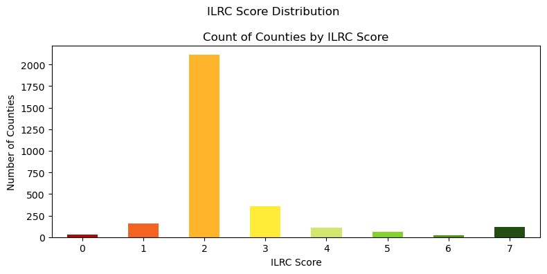
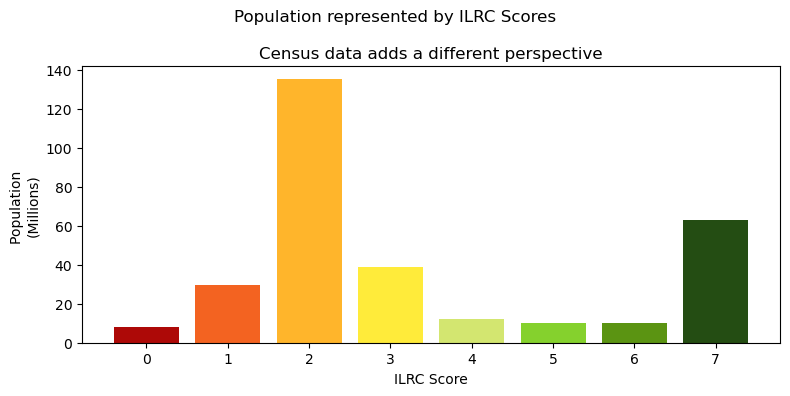
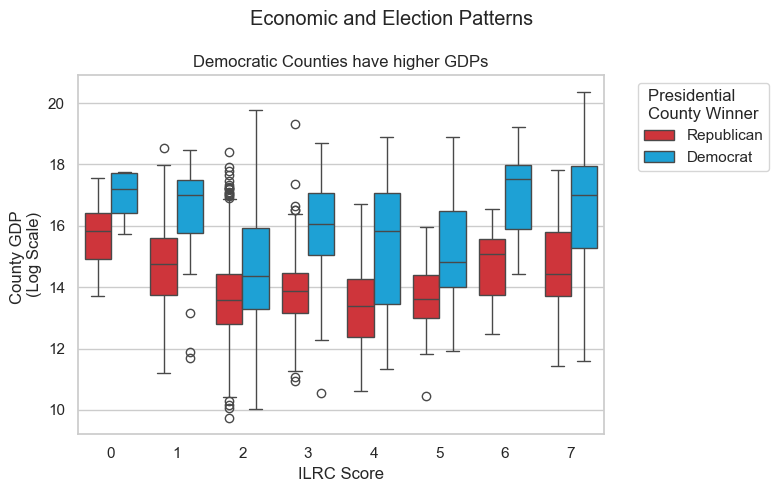
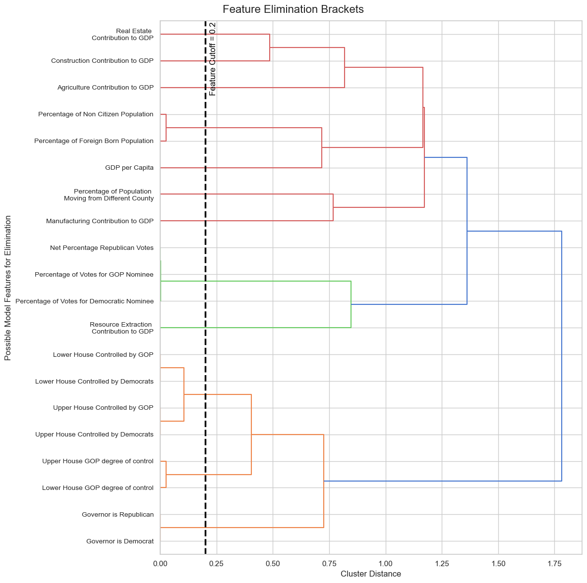
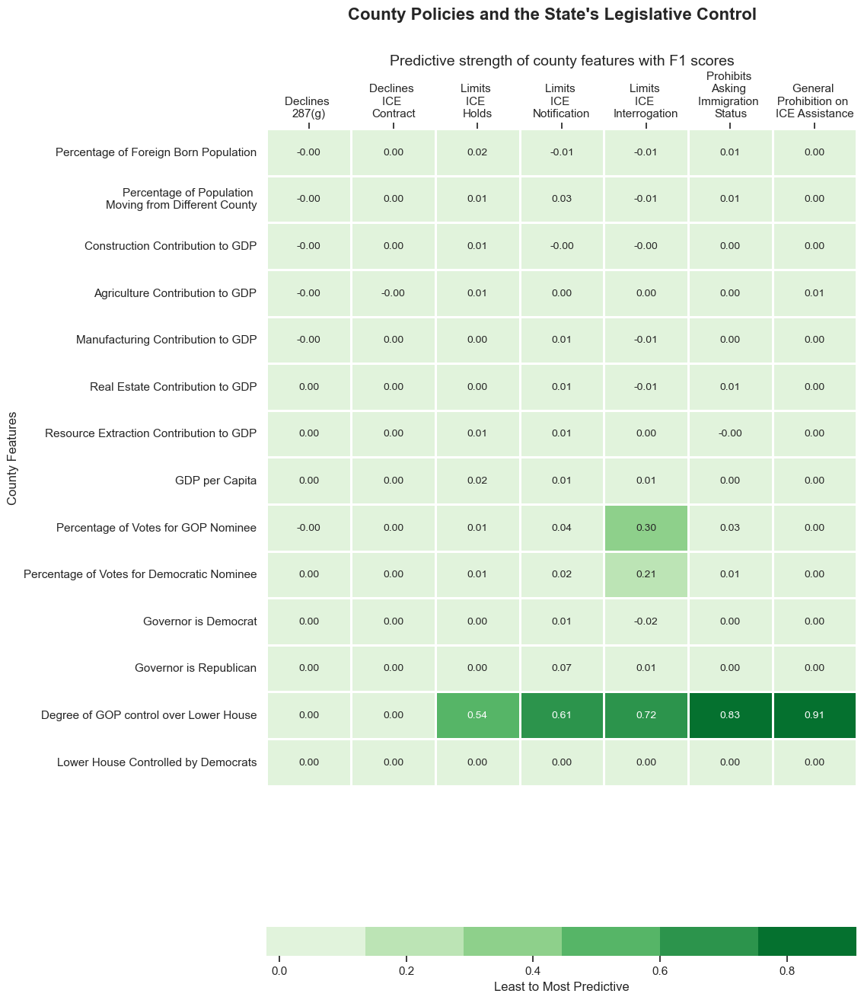
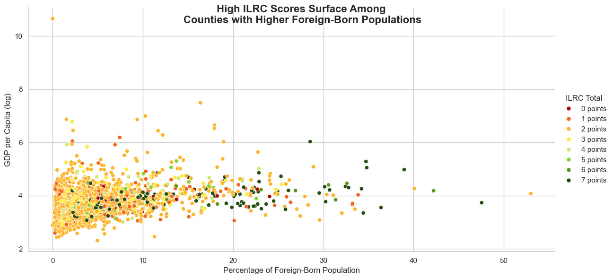

What underlying patterns are associated with counties implementing sanctuary policies?
Authors: Kim Larson, Connor Warren
Summary
A political party’s dominance over a state’s legislative lower house is the strongest predictor of a county’s U.S. Immigration and Customs Enforcement (ICE) cooperation policies when factoring in census information about county demographics, economic data including GDP by industry, and the political affiliation of elected officials at the state and federal levels.
Background
This project examines the relationship between local economic, demographic, and political factors and county-level immigration policy, utilizing data from the ILRC, U.S. Census, Bureau of Economic Analysis, and electoral outcomes.
We developed predictive models to identify which county features are most strongly associated with how the county cooperates or resists assisting federal immigration detention. The findings offer insight into the structural patterns that may influence immigration-related policy decisions at the county level.
The Immigration Legal Resource Center (ILRC) was founded as the Golden Gate Immigration Clinic in 1979 to address the growing need for expert assistance and training in immigration law and policy, following the increasingly complex legal and social challenges that immigrants faced. The ILRC aims to enhance immigration law and policy, expand the capabilities of legal service providers, and promote immigrant rights by training attorneys, paralegals, and community-based advocates who work with immigrants nationwide. The organization also informs elected officials and the public on shaping effective and just immigration policy and law.
In November 2019, the ILRC published a National Map of Local Entanglement with ICE, which assigned each county a score from 0 to 7. Counties with scores of 0 represent those that are most entangled with ICE, identified for spending “substantial local time and resources on civil immigration enforcement, [including those] under a 287(g) agreement.” A 287(g) agreement is a contract with ICE that delegates enforcement authority to state and local law enforcement agencies.
Counties with scores of 7 represent counties that are least entangled, and identified for having “the most comprehensive protections to prevent local resources from going to civil immigration enforcement.” Counties with no jail are assigned a score of 8, and counties with no available data receive no score and were dismissed from the scope of this research.
Multnomah County in Oregon was assigned an ILRC score of 6, which was generated by the sum of ‘Yes’ to the following policy metrics:
| Policy Type | Metric | Multnomah County Points |
|---|---|---|
| Passive | Declines 287(g) Program | Yes |
| Passive | Declines ICE detention contract | Yes |
| Active | Limits ICE holds | Yes |
| Active | Limits ICE notifications | Yes |
| Active | Limits on ICE interrogations in jail | No |
| Active | Prohibition on asking immigration status | Yes |
| Active | General Prohibition on Assistance to ICE | Yes |
We differentiated policy types as either active or passive policies. Passive policies accumulate points when counties take no action to cooperate with ICE. Active policies accumulate points when counties take proactive measures to protect local resources from aiding ICE efforts. For example, declining a 287(g) agreement is considered a passive policy because the county must actively agree to the contract for it to be in place. In contrast, limiting ICE notifications is a proactive measure counties must take to prevent ICE from benefiting from local resources.
By combining county and state policy data from the ILRC with publicly available census and elected official political affiliation data, we aimed to gain a deeper understanding of how elected officials at different levels of government are associated with various immigration policies.
Methods
Data Engineering
Governmental and non-governmental agencies’ data was used for this project, including directly from the U.S. Census Bureau, the Bureau of Economic Analysis, as well as indirectly from Wikipedia and GitHub. For this project, we focused on county-level information, including election results, immigration policies, and population demographic data. We contextualized it with relevant state data, such as the governor’s political party affiliation.
Policy Data:
The Immigrant Legal Resource Center (ILRC) published a map of local entanglement with U.S. Immigration and Customs Enforcement (ICE). We extracted the immigration policy dataset from the rendered map by inspecting the page and downloading the .csv file from the HTML. The dataset includes the ILRC score, policy type, county name, and ILRC comments.
Counties that are operating with no changes to their policies will default to a score of 2. To achieve a score of 0 or 1, counties must forfeit their passive points by actively deciding to route local resources to ICE. To achieve a score of 3 or higher, counties must have implemented active policies that prevent ICE from utilizing local resources.
Population Demographics:
Population data enabled us to determine to what degree the population demographics of a county could predict the adoption of the policies that contributed to the ILRC scores.
The population data was taken from the American Community Survey (ACS) 5-year survey and retrieved through the Census Bureau’s API for the ACS. The Census Bureau also provided the essential index tables for counties and state codes. The Census Bureau recommends using non-overlapping years for these comparisons, so only the datasets from 2023, 2018, and 2013 were included, which span the years from 2009 to 2023. The API returned the data in JSON format at the county level, which was then converted into tidy tabular data, with each row representing a county in a specific period, using pandas.
Population data by the Census collected at the county level includes: county name, Foreign-born Population Estimate, Foreign-born Population Margin, Non-citizen Pop Estimate, Non-citizen Pop Margin, Lived in Different House Estimate, Lived in Different House Margin, Total Population Estimate, Total Population Margin, state, county, and the year the data was collected from 2013 to 2023.

By joining the ILRC policy data with the ACS population data, we recognize that despite very few counties having a score of 0 or 6, a proportionally higher number of people are living within counties with those scores. This suggests that counties with higher populations are more likely to have taken proactive measures in determining how they will or will not cooperate with ICE.
Election & Economic Data:
To add another perspective to the analysis beyond census data, we included election results and economic data to see if there was strong predictive power with those dimensions.
Election data was taken from a diverse portfolio of publicly available online sources. Data were copied from state government websites for the political affiliation of state governors and the composition of the state legislative branches.
For county-level results for presidential election cycles, a GitHub repository contains the results of every presidential election at the county level since 2008. The data concerning the partisanship of state governments was converted into a tabular format, and the election data was already in a tidy format at the county level.
To standardize the data, third-party officials were tabulated with Democrats as non-Republicans, following the caucus behaviors in Alaska and Vermont. The data was pulled prior to the assassination of Democratic Speaker of the House Melissa Hortman in June 2025, which flipped Minnesota’s lower house majority from Democrat control by a single seat margin to being evenly split.
The Bureau of Economic Analysis (BEA) data was pulled using their API endpoints. The BEA data provided data on economic activities in a given county, which was filtered to include the fields of interest and overall county GDP. The datasets were converted from JSON format to tidy tabular data and normalized to include GDP per Capita.

This shows us an interesting pattern that for any given ILRC score, counties that voted for the Democratic presidential candidate in the most recent election have higher GDPs than those that voted for the Republican candidate.
Final Aggregations & Normalization
To make county-level comparisons, we aggregated the county-level data from the ACS, the BEA, and the election data. The demographic and economic features were averaged across the period under study, while the election data were summed.
We normalized the data to compute the ratio of each industry to the overall county GDP, the GDP per capita, and the proportion of the total population that was in each demographic category. Lastly, we merged the normalized data with the state-level datasets.
Machine Learning
Attempting to predict the overall ILRC score from the data is a single multivariate classification problem, which can be simplified into seven binary classification problems. In this approach, we use the data to predict each ILRC point individually, as the overall score is the sum of the individual ILRC points. After this simplification, we tested three classification models from the scikit-learn library in Python: GradientBoostingClassifier, LogisticRegression, and DecisionTreeClassifier. Utilizing five-fold cross-validation, we found that the GradientBoostingClassifier performed best overall when fitted on the normalized county-level data.
We found that gradient boosting classification was the most effective classifier overall among the three we tested. We also found that there was mostly limited but, in some cases, significant improvement when certain groups of features were removed. This led us to explore a more systematic approach to refining the feature space utilizing clustering. From this, we found that as the feature space decreases, the F1 score declines, which is especially noticeable for active policies. The F1 score is a metric that balances a classification model’s performance by considering both precision and recall. It’s used for imbalanced datasets like the one in this project, where one class has significantly more instances than the other. The F1 score can range from 0 to 1, with higher scores indicating better performance. Computing the mean F1 score from the five folds indicated that the Boosting Classifier was the most effective model.
Proceeding with the GradientBoostingClassifier and refining the contributing features. Broadly removing sources at the county level normalized the data. Again, using five-fold cross-validation, we found that eliminating sources of data did not diverge substantially from the full feature spaces, but in some cases, improved upon the whole feature space.

Using Ward’s linkage from the SciPy library, we found that some features were highly similar in the vector space. We settled on a distance threshold of 0.2 after brief testing, which led to the removal of the upper house of the state Legislature, or Senate, and the use of numbers associated with the lower house, or House, in the final feature space. The percentage of non-citizens in the population was also removed as it was highly correlated with the rate of foreign-born individuals in the population.
We then systematically removed features to improve the F1 score. We initiated this approach by clustering the features using the fcluster function from the SciPy library, with a threshold that was iteratively increased by 0.2 and one feature retained from each cluster. A higher threshold yields fewer features, while a threshold of 0 includes the whole feature space. The results of this approach indicated that the best threshold for clustering was 0.2.
We used the permutation_importance function from the scikit-learn library to determine the importance of each feature in the model. The permutation importance measures the decrease in model performance when a feature’s values are randomly shuffled, which disrupts the relationship between that feature and the target variable.
The accuracy for predicting active policies drops off sharply as the number of features selected decreases. When we performed feature permutation on the final set of features, it demonstrated that the state-level political environment is most predictive of active policies, particularly the composition of the lower house of the state Legislature.
Results
The degree of which a political party controls the state Legislature is the strongest predictor of the policies comprising the ILRC score. The GradientBoostingClassifier performed best overall, with an F1 score of 0.98 for the passive policies and 0.81 for the active policies.
The predictive power of the model is limited by the data available, as the ILRC score is a composite of seven policies, some of which are more difficult to predict than others. The active policies had stronger associations with the net political affiliation of the lower house of the state Legislature, which is to say if the state’s lower house is more universally Republican the counties associated with that state are more likely to have a specific policy outcome, similarly to how states with a lower house that is more universally Democrats, the counties associated with that state will have the opposite specific policy outcome.

Conclusion
The objectives of this project were to look at what counties with similar immigration policies have in common. We have found that for active policies the most important features are the difference between the proportion of Republican control and proportion of Democratic control in the lower house of the state Legislature. This research makes no claim about causation between the support for Republican state legislators and restrictive immigration policy because we lacked time series data concerning the changes in immigration policies.
The ethical implications of this research include the risk that the findings be misunderstood as predictive or causal instead of correlated.
Future Research
While navigating this project, we identified several improvements as future research opportunities that could add new light to how we understand what marginal changes can result in the most significant shifts in county-level immigration policies.
Education Policies
There are differences in state policies regarding whether non-citizens can receive in-state higher education tuition. This could be explored as a feature for as either a predictive feature similar to the voting behaviors and demographics, or as an output variable on the broader theme of inclusivity and integration.
Comment Text Analysis
In the ILRC data, cach county is annotated with comments that could add insights regarding which branch of government is most active in policy changes. For example, the comments for Multnomah County are:
- 2015 ICE Comments: Ground Zero for detainer issues, County for Portland, OR, adjacent to Clackamas County, which was the subject of Miranda-Olivares. Awaiting response from the County concerning the future meeting on PEP. 09/28/2015 Update: The Oregon USAO is hosting a meeting with representatives from Clackamas, Marion, Multnomah, and Washington counties, including sheriffs, district attorneys, county counsels, and others, to discuss PEP. DEAD B(6) B(7)C and AFODs B(6) B(7)C will be participating.
- 2017 ICE Comments: Basis of policy refined to more accurately reflect understanding of Oregon State Sheriff’s Association (OSSA) position and respective Sheriff’s policy as it has evolved: Does not provide foreign-born arrest information. It will allow ICE access to interview an alien. Will honor the 48-hour hold provision of I-247A only with a criminal warrant issued by the USDC. Miranda-Olivares v. Clackamas County cited as prohibiting compliance with DHS administrative detainers. Will not allow transfer of custody within the secure area of the facility. ORS 181A.820 is cited as prohibiting the transfer of custody and ongoing exchange of information, including the release of information.
Further research could be done to analyze the comments and identify patterns in the language used by counties with different ILRC scores. This could provide additional insights into the motivations and concerns of local governments, as well as how elected judges and other officials may influence the implementation of sanctuary policies. For example, Miranda-Olivares v. Clackamas County is cited for all counties in Oregon, whereas states with lower scores do not cite similar rulings in the comments to similar degrees.
Unemployment Rate
Beyond the industry activity for individual counties, additional research could be done to look at how unemployment rates may be associated with the ILRC score. The unemployment rate is a key economic indicator that could predict voter outlooks and preferences reflected in immigration policies.
Population Diversity
The diversity of the population in a county could be another factor to consider. Counties with higher proportions of foreign-born residents or non-citizens may have different perspectives on immigration policies.

FBI Crime Statistics
The FBI crime statistics could be used to look at the relationship between crime rates and ILRC scores. This could provide additional insights into how local governments perceive the relationship between crime rates and immigration policies.
Data Sources
| Category | Description | Link |
|---|---|---|
| Immigration Policy Data | ILRC immigration policy data by county | Datawrapper |
| Census Population Data | ACS 5-Year population and migration estimates | U.S. Census Bureau |
| Economic Data | GDP by industry and state | BEA (Bureau of Economic Analysis) |
| Federal Elections Data | U.S. county-level federal election results (2008–2024) | GitHub - tonmcg |
| Governor Data | List of current U.S. governors | Wikipedia |
| State Legislature Data | Composition of state Legislatures | Wikipedia |